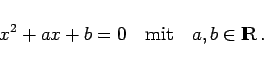
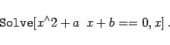
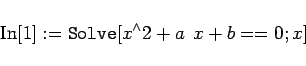
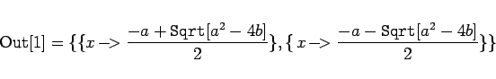
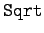
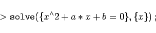
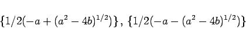

Inhalt Index DeskTop Bronstein

 Computeralgebrasysteme Einführung Einführende Beispiele für die Hauptanwendungsgebiete
Computeralgebrasysteme Einführung Einführende Beispiele für die Hauptanwendungsgebiete


Unter Formelmanipulation wird hier im weitesten Sinn die Umformung mathematischer Ausdrücke zwecks ihrer Vereinfachung oder ihrer Darstellung in einer für weitere Manipulationen zweckmäßigen Form, die Lösung von Gleichungen und Gleichungssystemen durch algebraische Ausdrücke, die Differentiation von Funktionen, die Berechnung unbestimmter Integrale, die Lösung von Differentialgleichungen, die Bildung unendlicher Reihen usw. verstanden.
| Beispiel |
|
Lösung der folgenden quadratischen Gleichung: |
|  | (20.2a) |
In Mathematica wird eingegeben (man beachte das Leerzeichen zwischen a und x):
|  | (20.2b) |
Nach Betätigen des entsprechenden Eingabeabschlußbefehls (EINF oder SHIFT+ENTER) ersetzt Mathematica diese Zeile durch
|  | (20.2c) |
und beginnt mit der Abarbeitung. Nach kurzer Zeit erscheint eine neue Zeile mit dem Inhalt
|  | (20.2d) |
Mathematica hat die Gleichung gelöst und die beiden Wurzeln in Form einer Liste aus zwei Unterlisten, die jeweils eine Lösung enthalten, dargestellt. Dabei ist  das Symbol für die Quadratwurzel.
In Maple erfolgt die Eingabe in folgender Form:
|  | (20.3a) |
Wichtig ist hier das Semikolon nach dem letzten Symbol. Nach der Eingabebestätigung mit ENTER bearbeitet Maple die Eingabe und liefert in der nächsten Zeile
|  | (20.3b) |
Das Ergebnis ist in Form einer Folge von zwei Ausdrücken, den beiden Lösungen, dargestellt.
Abgesehen von den speziellen Zeichen für das jeweilige Computeralgebrasystem, besteht vom grundsätzlichen Aufbau her große Ähnlichkeit. Am Anfang steht ein Symbol, das vom System als Operator verstanden wird, der auf einen in Klammern stehenden Operanden anzuwenden ist. Das Ergebnis wird als Liste oder Folge der Lösungen wiedergegeben. Ähnlich werden viele Operationen der Formelmanipulation dargestellt.